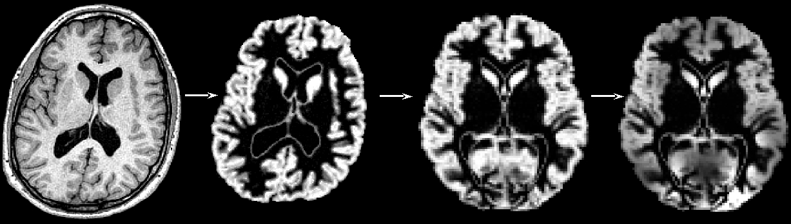

Contents
- Introduction
- User Guide
New version: FSL-VBM v1.1 has switched the nonlinear registration to using FNIRT (FMRIB's Nonlinear Registration Tool). FNIRT is about 10-15 times faster than IRTK on structural data and possibly a little more 'accurate'. An FSL-VBM v1.1 analysis is not compatible with an older analysis. To see the full list of changes from the previous version see what's new.
Research Overview: Why FSL-VBM?
You might want to investigate voxel-wise differences in the local grey matter volume/topography in one population related to (e.g.) one clinical score, or between several populations. Or you might be carrying out a functional study (fMRI, PET) and want to test whether the effect seen in this study is possibly caused by structural GM differences. This approach is unbiased, in that it requires no a priori information about the location of these possible differences in the grey matter, and is not operator-dependant. It follows the optimised VBM protocol developed by Good et al., 2001.
To be able to compare all the GM images on a voxelwise basis, they need to be transformed into a standard space, which involves the use of non-linear registration. This approach is somewhat of a trade-off: in order to be able to compare voxel-by-voxel the local GM volume in your images, you want all the structures across your subjects to match (that's why you use a non-linear registration), but not "too much" or you would not be able to see any difference, if all these structures were perfectly aligned across the subjects (that's why you use limited degrees-of-freedom for the non-linear registration).
Please bear in mind that the interpretation of the results you may obtain with such voxel-wise analysis has inherent limitations, however. It is sometimes not possible to determine if the results you may find are the consequence of an effective reduced thickness or atrophy in the grey matter, or rather an indirect reflection of a different gyrification pattern. Indeed, it might be possible that a misalignment of the gyri/sulci or even different folding patterns may lead to the difference of grey matter distribution that you have found. Moreover, there is theoretically a continuum of results dependent on the degrees of freedom of the non-rigid registration used (here free-form deformation with 20 mm initial control point spacing) and the amount of smoothing.

For more detailed information:
On the validation of the FSL-VBM approach and a clinical application:
see Douaud et al., Anatomically related grey and white matter abnormalities in adolescent-onset schizophrenia. Brain 2007.
On a dedicated longitudinal FSL-VBM protocol and a clinical application:
see Douaud et al., Schizophrenia delays and alters maturation of the brain in adolescence. Brain 2009.
- On the VBM protocol:
see Ashburner et al., Voxel-based morphometry-the methods. Neuroimage 2000.
see Good et al., A voxel-based morphometric study of ageing in 465 normal adult human brains. Neuroimage 2001.
- On the issues of such voxel-wise analyses:
see Bookstein,"Voxel-based morphometry" should not be used with imperfectly registered images. Neuroimage 2001.
see Ashburner et al., Why voxel-based morphometry should be used. Neuroimage 2001.
see Crum et al., Zen and the art of medical image registration: correspondence, homology, and quality. Neuroimage 2003.
see Jones et al., The effect of filter size on VBM analyses of DT-MRI data. Neuroimage 2005.
Referencing FSL-VBM
If you use this tool in your research, you may want to incude the following methods description, and please reference the papers listed below:
"Structural data was analysed with FSL-VBM (Douaud et al., 2007, http://fsl.fmrib.ox.ac.uk/fsl/fslwiki/FSLVBM), an optimised VBM protocol (Good et al., 2001) carried out with FSL tools (Smith et al., 2004). First, structural images were brain-extracted and grey matter-segmented before being registered to the MNI 152 standard space using non-linear registration (Andersson et al., 2007). The resulting images were averaged and flipped along the x-axis to create a left-right symmetric, study-specific grey matter template. Second, all native grey matter images were non-linearly registered to this study-specific template and "modulated" to correct for local expansion (or contraction) due to the non-linear component of the spatial transformation. The modulated grey matter images were then smoothed with an isotropic Gaussian kernel with a sigma of ?? mm. Finally, voxelwise GLM was applied using permutation-based non-parametric testing, correcting for multiple comparisons across space."
Douaud G, Smith S, Jenkinson M, Behrens T, Johansen-Berg H, Vickers J, James S, Voets N, Watkins K, Matthews PM, James A (2007) Anatomically related grey and white matter abnormalities in adolescent-onset schizophrenia. Brain 130:2375-2386.
Good CD, Johnsrude IS, Ashburner J, Henson RN, Friston KJ, Frackowiak RS (2001) A voxel-based morphometric study of ageing in 465 normal adult human brains. NeuroImage 14:21-36.
Smith SM, Jenkinson M, Woolrich MW, Beckmann CF, Behrens TE, Johansen-Berg H, Bannister PR, De Luca M, Drobnjak I, Flitney DE, Niazy RK, Saunders J, Vickers J, Zhang Y, De Stefano N, Brady JM, Matthews PM (2004) Advances in functional and structural MR image analysis and implementation as FSL. NeuroImage 23 Suppl 1:S208-219.
Andersson, M. Jenkinson and S. Smith (2007) Non-linear registration, aka Spatial normalisation. FMRIB technical report TR07JA2 from www.fmrib.ox.ac.uk/analysis/techrep